JaipurJaipur
Marie-Hélène de Taillac
The woman who brought colour into fine jewelry.La femme qui a mis la couleur dans la haute joaillerie.
Stones, palaces and parakeets.Des pierres, des palais et des perruches.
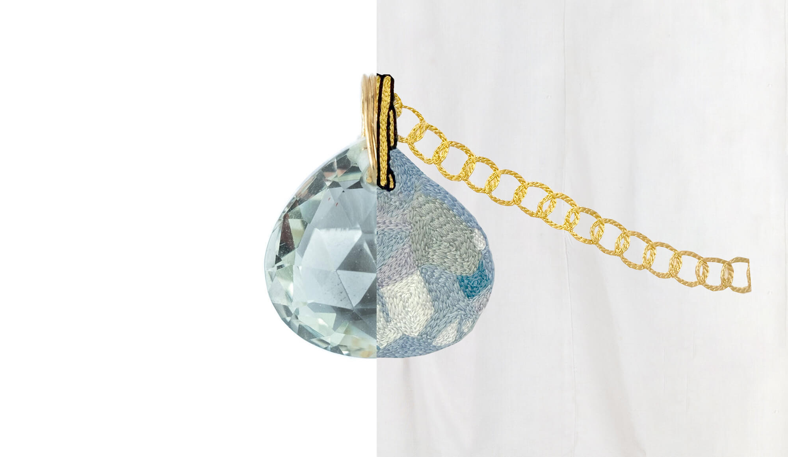
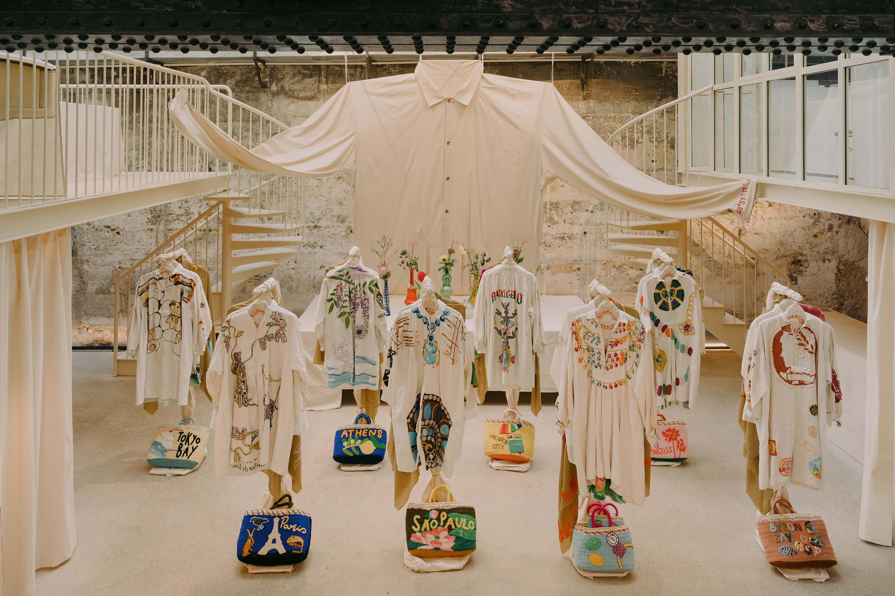
Eight women who create jewelry, in eight cities. They chose their jewels and their places. Not a postcard: real spots, what they truly love about their city. Some are known around the world, others not yet. It does not matter. They have all agreed to be mingled with one another, as equals, on the same pieces. It is a collective. Huit femmes qui créent des bijoux, dans huit villes. Chacune a choisi ses bijoux et ses endroits. On est loin de la carte postale : de vrais spots et éléments qu’elles aiment vraiment de leur ville. Certaines sont connues dans le monde entier, d’autres ne le sont pas encore. Ça n’a aucune importance. Elles ont toutes accepté d’être mêlées les unes aux autres, à égalité, sur les mêmes pièces. C’est un collectif.
Marie-Hélène de Taillac
The woman who brought colour into fine jewelry.La femme qui a mis la couleur dans la haute joaillerie.
Stones, palaces and parakeets.Des pierres, des palais et des perruches.

Gabrielle Greiss
The hidden hand of Paris’s great fashion houses, turned sculptor.La main de l’ombre des grandes maisons parisiennes, passée à la sculpture.
A dreamy city, its animals and the Eiffel Tower seen from afar.Une ville rêveuse, ses animaux et la tour Eiffel vue de loin.
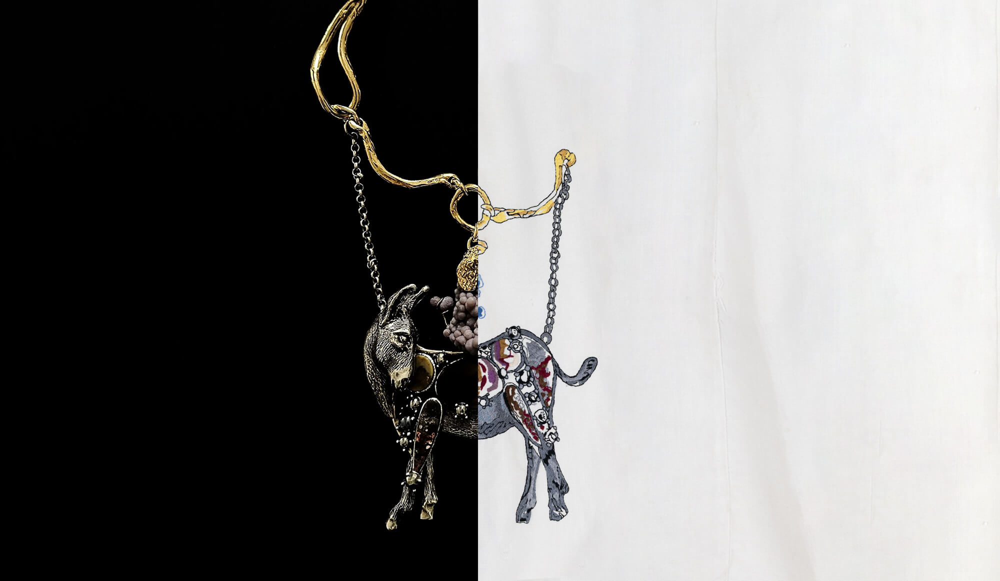
Ileana Makri
An eye, a snake, a thread of diamonds: three thousand years of Athens turned into everyday talismans.Un œil, un serpent, un fil de diamants : trois mille ans d’Athènes en talismans de tous les jours.
Olive trees, the blue eye and the sea.Les oliviers, l’œil bleu et la mer.
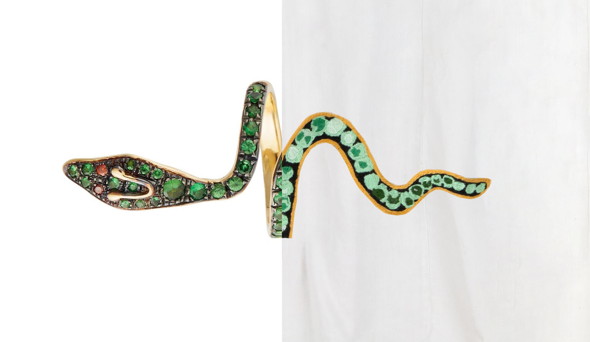
Silvia Furmanovich
She brings the forest into the jewel.Elle fait entrer la forêt dans le bijou.
A green city, its forest, its butterflies and the ironwork of its gardens.Une ville verte, sa forêt, ses papillons et la ferronnerie de ses jardins.
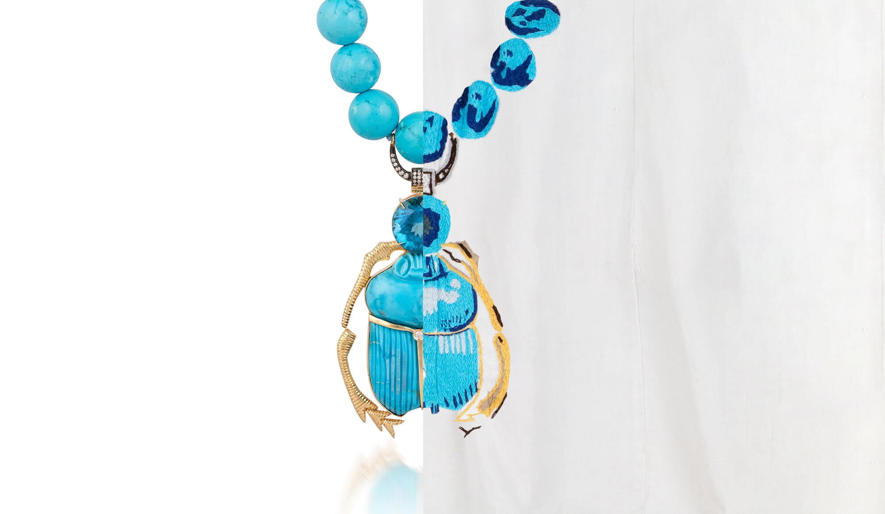
Shinobu Marotta
Jewels with wit: an agate becomes a landscape, and precious Japan starts to speak.Des bijoux qui ont de l’esprit : une agate devient paysage et le Japon précieux se met à parler.
Cascading mimosa and the light of the city resting on the water.Des mimosas en cascade et la lumière de la ville posée sur l’eau.
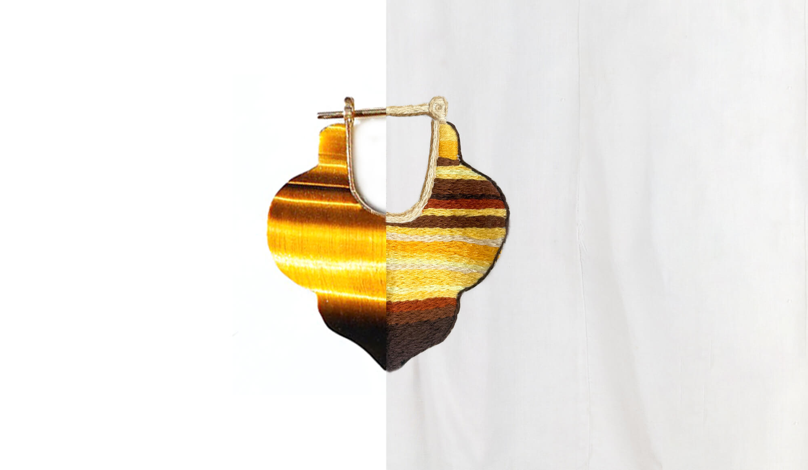
Daniela Villegas
She dissects life, turns it inside out, then sutures it back together with gold.Elle dissèque la vie, la retourne, puis la recoud au fil d’or.
The electric sprawl of Mexico City, where colour refuses moderation.L’étendue électrique de Mexico, où la couleur refuse toute modération.
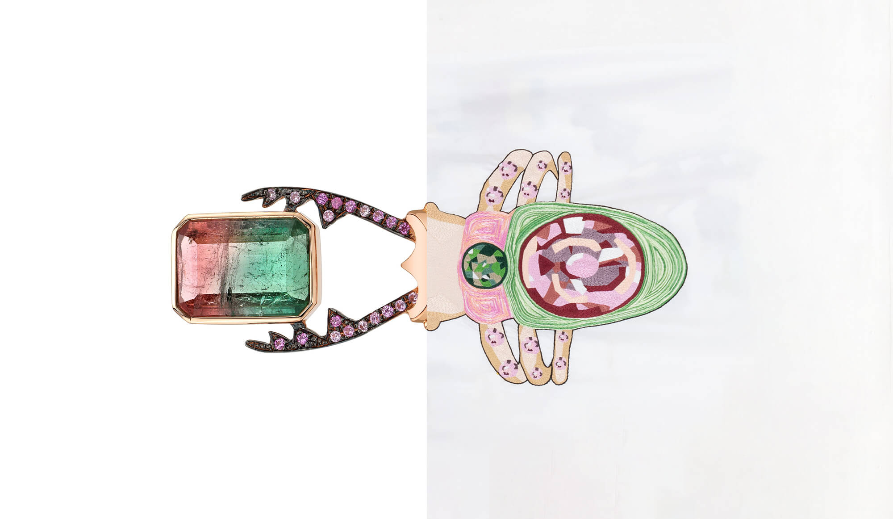
Karen Liberman
Gold with stories to tell, set with genuine ancient coins.Un or qui a des histoires à raconter, serti de vraies pièces antiques.
Coastal light, shells and the profile of an ancient medallion.La lumière côtière, ses coquillages et le profil d’une médaille ancienne.
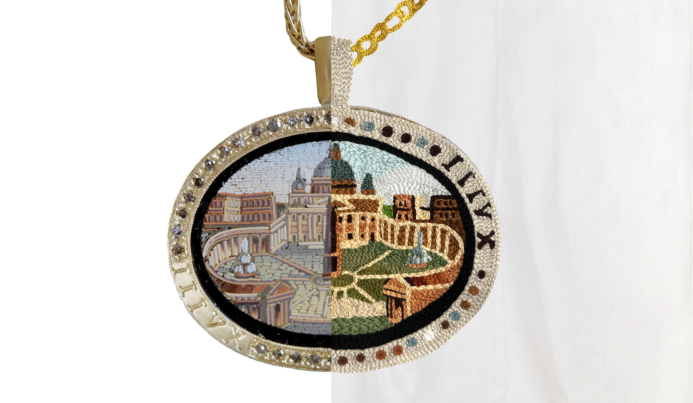
Brooke Gregson
She holds earth and sky together.Elle tient la terre et le ciel ensemble.
Palm trees, roller skaters and the precious heart of Venice.Ses palmiers, ses rollers et le cœur précieux de Venice.
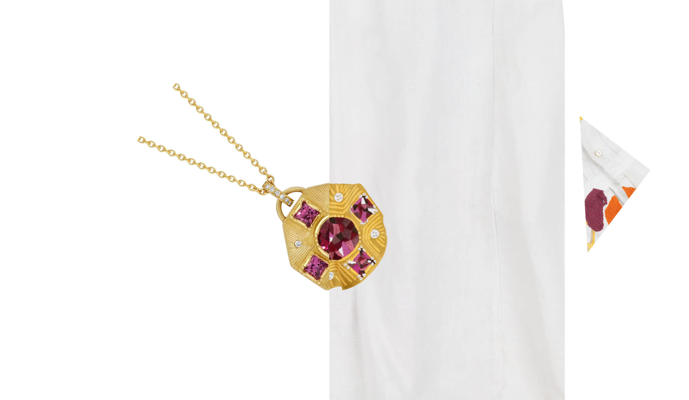
Fifteen portraits, each one teleported into the city of a designer. Quinze portraits, chacun téléporté dans la ville d’une créatrice.

Carla Ortega teleported intéléportée dans Ileana Makri’s Athensl’Athènes d’Ileana Makri

Pierre & Atenea Violet teleported intéléportés dans Brooke Gregson’s Los Angelesle Los Angeles de Brooke Gregson
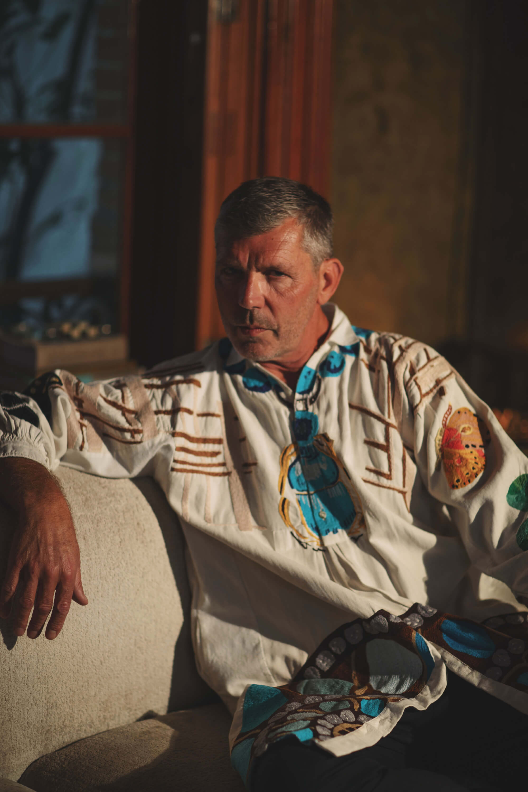
Emmanuel Picaut teleported intéléporté dans Silvia Furmanovich’s São Paulole São Paulo de Silvia Furmanovich

Rudy F. Weissenberg teleported intéléporté dans Karen Liberman’s Byron Bayle Byron Bay de Karen Liberman

Julio Amezcua teleported intéléporté dans Daniela Villegas’s Mexicole Mexico de Daniela Villegas

Gabriel Lopez Morton teleported intéléporté dans Shinobu Marotta’s Tokyo Bayla baie de Tokyo de Shinobu Marotta

Ana Hop teleported intéléportée dans Karen Liberman’s Byron Bayle Byron Bay de Karen Liberman

Fabiola Zamora teleported intéléportée dans Gabrielle Greiss’s Parisle Paris de Gabrielle Greiss

Sofia Mariscal teleported intéléportée dans Silvia Furmanovich’s São Paulole São Paulo de Silvia Furmanovich

Marcelo Ramirez Romero teleported intéléporté dans Gabrielle Greiss’s Parisle Paris de Gabrielle Greiss

Sofia Mariscal teleported intéléportée dans Marie-Hélène de Taillac’s Jaipurle Jaipur de Marie-Hélène de Taillac

Mariana Villarreal teleported intéléportée dans Shinobu Marotta’s Tokyo Bayla baie de Tokyo de Shinobu Marotta

Alonso Teruel teleported intéléporté dans Gabrielle Greiss’s Parisle Paris de Gabrielle Greiss

Stephanie Arouesty teleported intéléportée dans Daniela Villegas’s Mexicole Mexico de Daniela Villegas
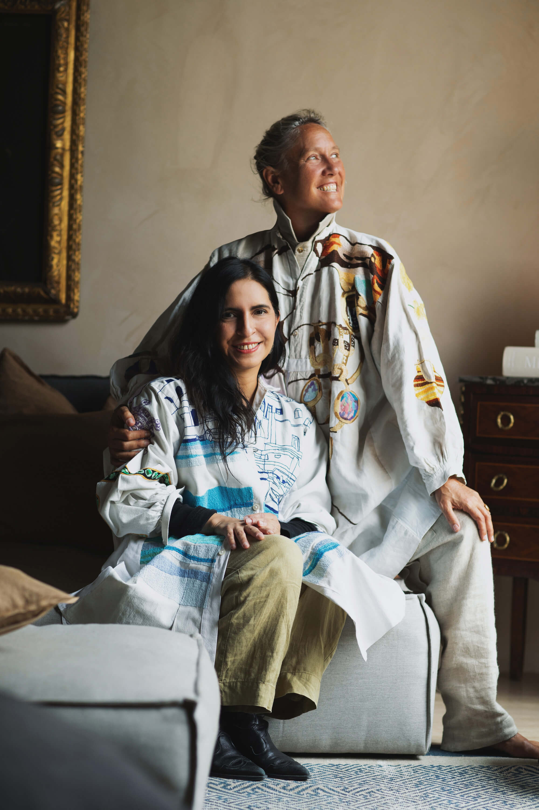
Alexandra Senes teleported intéléportée dans Shinobu Marotta’s Tokyo Bayla baie de Tokyo de Shinobu Marotta
Leonora Viveros teleported intéléportée dans Ileana Makri’s Athensl’Athènes d’Ileana Makri
Photography — Ana HopPhotographie — Ana Hop